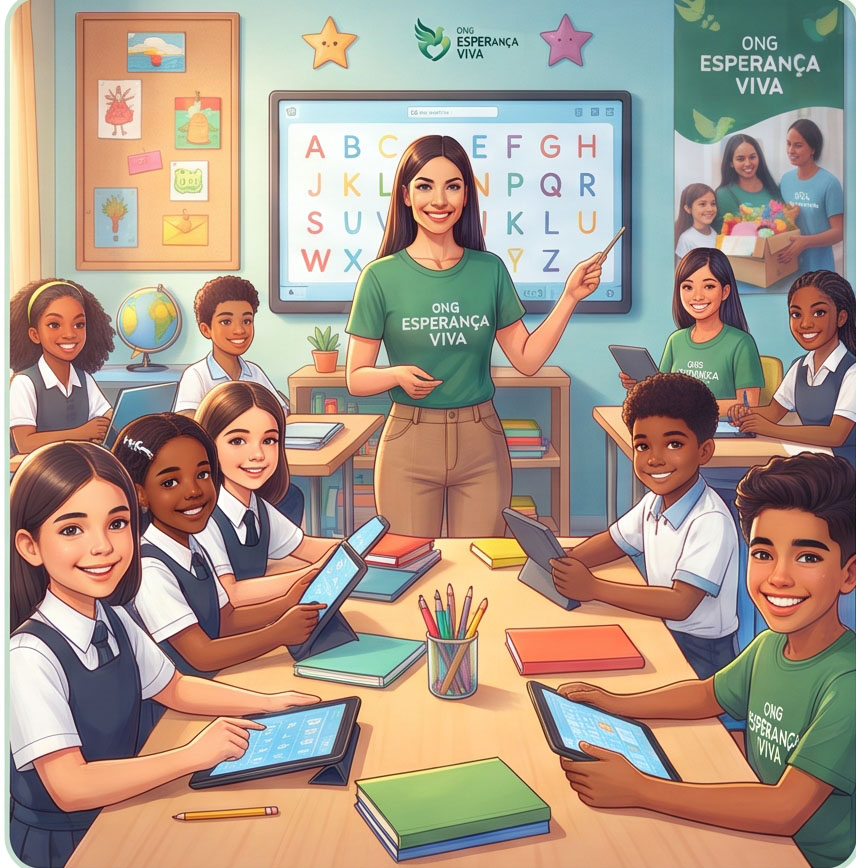
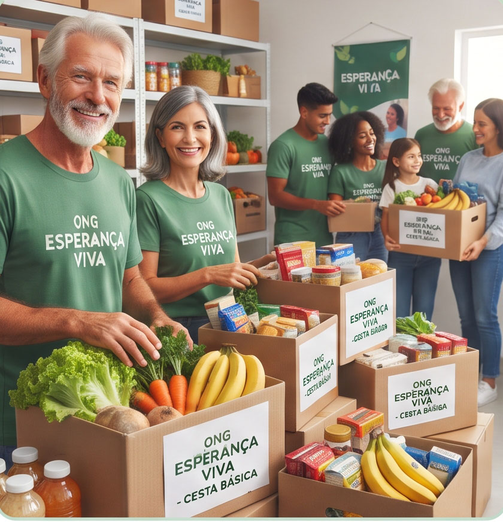
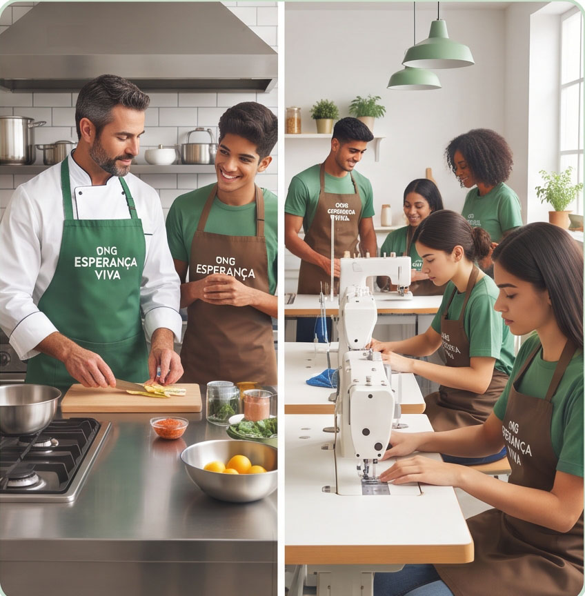

Educação para o Futuro

Oferecemos reforço escolar pedagógico, oficinas de informática básica e letramento digital para crianças e jovens da periferia, fortalecendo o rendimento escolar e combatendo a evasão precoce.
🌱 ONG Esperança Viva
Meta de Arrecadação de Alimentos em 85%
Descubra como transformamos a realidade de centenas de famílias por meio de nossas frentes contínuas de desenvolvimento comunitário. Veja de que forma você pode fazer parte dessa corrente do bem, seja dedicando seu tempo como voluntário ou contribuindo com doações.
Conheça os programas sociais ativos que estão gerando impacto real e duradouro no dia a dia das comunidades assistidas:

Oferecemos reforço escolar pedagógico, oficinas de informática básica e letramento digital para crianças e jovens da periferia, fortalecendo o rendimento escolar e combatendo a evasão precoce.

Realizamos a arrecadação contínua e distribuição mensal de cestas de alimentos balanceados e hortifrúti fresco para famílias em extrema vulnerabilidade socioeconômica, assegurando refeições dignas.

Promovemos cursos e oficinas profissionalizantes gratuitos nas áreas de gastronomia, corte e costura e atendimento ao público, fomentando o empreendedorismo e a autonomia financeira dos alunos.
A força da ONG Esperança Viva reside na solidariedade ativa da nossa rede de apoiadores. Escolha como prefere participar:
O engajamento de voluntários é o coração pulsar da nossa organização. Você pode doar seus talentos nas aulas de reforço, na montagem e logística de mantimentos ou no suporte aos eventos comunitários.
Aceitamos doações contínuas de alimentos não perecíveis, agasalhos, livros e materiais escolares, além de aportes financeiros via chave PIX oficial. Cada centavo é aplicado com prestação de contas transparente.